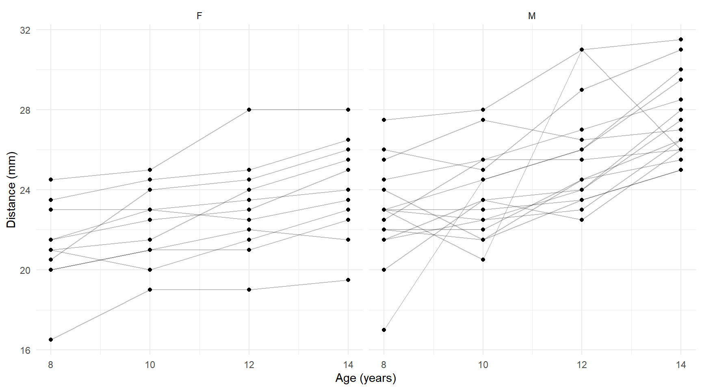
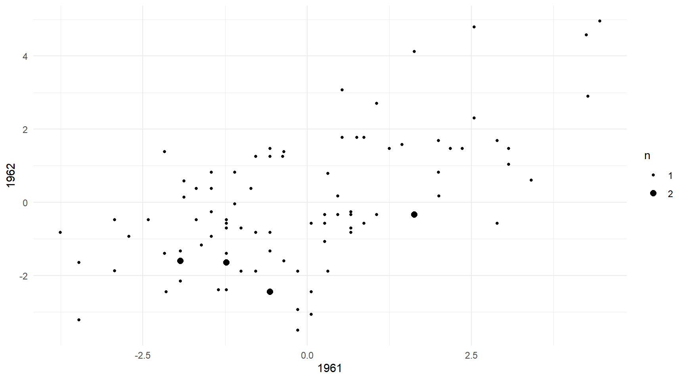
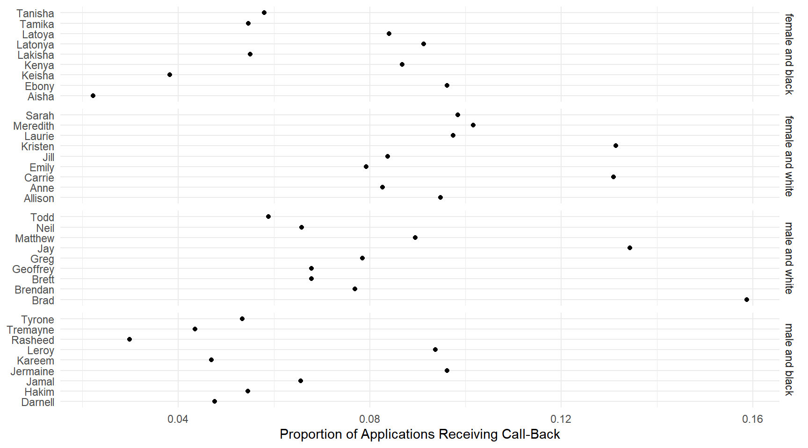

Categorical Response Variables, Marginal and Mixed Effect Models, and Review
Statistics 516, Homework 5 (Solutions)
You can also download a PDF copy of this homework assignment.
Dental Fissure Growth Data
The data frame potthoffroy in the mice
package is from a study of the growth of the distance from the center of
the pituitary gland to the pteryomaxillary fissure in boys and girls.1 The
pituitary-pteryomaxillary distance was measured four times at ages 8,
10, 12, and 14 in several boys and girls. These longitudinal data are
stored in wide form.
library(mice)
head(potthoffroy) id sex d8 d10 d12 d14
1 1 F 21.0 20.0 21.5 23.0
2 2 F 21.0 21.5 24.0 25.5
3 3 F 20.5 24.0 24.5 26.0
4 4 F 23.5 24.5 25.0 26.5
5 5 F 21.5 23.0 22.5 23.5
6 6 F 20.0 21.0 21.0 22.5For plotting and modeling we need to put them into long form. This is done below. Also a quantitative age variable is created from the column labels of the wide form data.
library(dplyr)
library(tidyr)
dental <- potthoffroy %>% rename(subject = id) %>%
pivot_longer(cols = c(d8,d10,d12,d14), names_to = "obs", values_to = "distance") %>%
mutate(age = as.numeric(substr(obs, 2, nchar(obs)))) %>% dplyr::select(-obs)
head(dental)# A tibble: 6 × 4
subject sex distance age
<int> <fct> <dbl> <dbl>
1 1 F 21 8
2 1 F 20 10
3 1 F 21.5 12
4 1 F 23 14
5 2 F 21 8
6 2 F 21.5 10The plot below shows the observations with line segments connecting the observations from the same subject.
library(ggplot2)
p <- ggplot(dental, aes(x = age, y = distance)) + theme_minimal() +
geom_line(aes(group = subject), alpha = 0.25) + geom_point() +
facet_wrap(~ sex) + labs(x = "Age (years)", y = "Distance (mm)")
plot(p)
These data were featured in the lecture on fixed effects models.2 The fixed effects
approach is not useful here for making inferences regarding sex, so you
will consider some other approaches that are more useful. When using the
geeglm and lmer functions you might find it
useful that these data are very similar in structure to the
Sitka data featured in lecture where we have
age instead of Time, sex instead
of ozone, and subject instead of
tree. Note that unlike the Sitka data we do
not need to transform the response variable or the time/age variable.
For each of the problems below report the summary output so
that I can verify that you specified and estimated the model
correctly.
Estimate a linear model using the
lmfunction with distance as the response variable and age andsexas the explanatory variables, with an interaction. Note that this is arguably not an appropriate model here as it does not account for the lack of independence of observations from the same subject, but you will use it for comparison. Using either thecontrastfunction or functions from the emmeans package, estimate (a) the difference in the expected distance between boys and girls at ages of 8, 10, 12, and 14, (b) the rate of change in the expected distance per year for boys and for girls, and (c) the difference in the rate of change in the expected distance per year between boys and girls.Solution: We can estimate the model as follows.
m <- lm(distance ~ sex * age, data = dental) summary(m)$coefficientsEstimate Std. Error t value Pr(>|t|) (Intercept) 17.3727 1.7080 10.1712 2.788e-17 sexM -1.0321 2.2188 -0.4652 6.428e-01 age 0.4795 0.1522 3.1515 2.122e-03 sexM:age 0.3048 0.1977 1.5421 1.261e-01Here I will show how to make the various inferences based on this models using both the
contrastfunction and the emmeans package, but in the later problems I will only use one or the other. Here are the comparisons between boys and girls at four ages.trtools::contrast(m, a = list(sex = "M", age = c(8,10,12,14)), b = list(sex = "F", age = c(8,10,12,14)), cnames = paste(c(8,10,12,14), "years"))estimate se lower upper tvalue df pvalue 8 years 1.407 0.7396 -0.06012 2.873 1.902 104 5.997e-02 10 years 2.016 0.4842 1.05604 2.976 4.164 104 6.465e-05 12 years 2.626 0.4842 1.66570 3.586 5.423 104 3.827e-07 14 years 3.236 0.7396 1.76886 4.702 4.375 104 2.897e-05This can also be done using the emmeans package.
library(emmeans) pairs(emmeans(m, ~sex|age, at = list(age = c(8,10,12,14))), infer = TRUE, reverse = TRUE)age = 8: contrast estimate SE df lower.CL upper.CL t.ratio p.value M - F 1.41 0.740 104 -0.0601 2.87 1.902 0.0600 age = 10: contrast estimate SE df lower.CL upper.CL t.ratio p.value M - F 2.02 0.484 104 1.0560 2.98 4.164 0.0001 age = 12: contrast estimate SE df lower.CL upper.CL t.ratio p.value M - F 2.63 0.484 104 1.6657 3.59 5.423 <.0001 age = 14: contrast estimate SE df lower.CL upper.CL t.ratio p.value M - F 3.24 0.740 104 1.7689 4.70 4.375 <.0001 Confidence level used: 0.95We can estimate the rate of change in the expected distance for boys and girls as follows.
trtools::contrast(m, a = list(sex = c("F","M"), age = 9), b = list(sex = c("F","M"), age = 8), cnames = c("girls","boys"))estimate se lower upper tvalue df pvalue girls 0.4795 0.1522 0.1778 0.7813 3.152 104 2.122e-03 boys 0.7844 0.1262 0.5342 1.0346 6.217 104 1.069e-08emtrends(m, ~sex, var = "age", infer = TRUE)sex age.trend SE df lower.CL upper.CL t.ratio p.value F 0.479 0.152 104 0.178 0.781 3.152 0.0021 M 0.784 0.126 104 0.534 1.035 6.217 <.0001 Confidence level used: 0.95And here is the comparison of the rates of change between boys and girls.
trtools::contrast(m, a = list(sex = "M", age = 9), b = list(sex = "M", age = 8), u = list(sex = "F", age = 9), v = list(sex = "F", age = 8))estimate se lower upper tvalue df pvalue 0.3048 0.1977 -0.08715 0.6968 1.542 104 0.1261pairs(emtrends(m, ~sex, var = "age"), infer = TRUE, reverse = TRUE)contrast estimate SE df lower.CL upper.CL t.ratio p.value M - F 0.305 0.198 104 -0.0872 0.697 1.542 0.1261 Confidence level used: 0.95Estimate a marginal linear model using the
geeglmfunction from the geepack package withdistanceas the response variable and age and sex as the explanatory variables, with an interaction. Note that subject is youridvariable and your correlation structure should be specified as exchangeable as was done in lecture. Using this model make the same inferences that you did in the previous problem using thecontrastfunction or the emmeans package. Note that the syntax for these inferences should be the same as what you used in the previous problem.Solution: We can estimate the model as follows.
library(geepack) m <- geeglm(distance ~ sex * age, data = dental, family = gaussian(link = identity), id = subject, corstr = "exchangeable") summary(m)Call: geeglm(formula = distance ~ sex * age, family = gaussian(link = identity), data = dental, id = subject, corstr = "exchangeable") Coefficients: Estimate Std.err Wald Pr(>|W|) (Intercept) 17.3727 0.7252 573.87 < 2e-16 *** sexM -1.0321 1.3778 0.56 0.4538 age 0.4795 0.0631 57.70 3.1e-14 *** sexM:age 0.3048 0.1169 6.80 0.0091 ** --- Signif. codes: 0 '***' 0.001 '**' 0.01 '*' 0.05 '.' 0.1 ' ' 1 Correlation structure = exchangeable Estimated Scale Parameters: Estimate Std.err (Intercept) 4.91 1.01 Link = identity Estimated Correlation Parameters: Estimate Std.err alpha 0.618 0.131 Number of clusters: 27 Maximum cluster size: 4Here are the comparisons between boys and girls at four ages.
trtools::contrast(m, a = list(sex = "M", age = c(8,10,12,14)), b = list(sex = "F", age = c(8,10,12,14)), cnames = paste(c(8,10,12,14), "years"))estimate se lower upper tvalue df pvalue 8 years 1.41 0.774 -0.128 2.94 1.82 104 0.071989 10 years 2.02 0.740 0.549 3.48 2.73 104 0.007525 12 years 2.63 0.778 1.084 4.17 3.38 104 0.001031 14 years 3.24 0.878 1.494 4.98 3.68 104 0.000367We can estimate the rate of change in the expected distance for boys and girls as follows.
emtrends(m, ~sex, var = "age", infer = TRUE)sex age.trend SE df asymp.LCL asymp.UCL z.ratio p.value F 0.480 0.0631 Inf 0.356 0.603 7.600 <.0001 M 0.784 0.0983 Inf 0.592 0.977 7.980 <.0001 Covariance estimate used: vbeta Confidence level used: 0.95And here is the comparison of the rates of change between boys and girls.
pairs(emtrends(m, ~sex, var = "age"), infer = TRUE, reverse = TRUE)contrast estimate SE df asymp.LCL asymp.UCL z.ratio p.value M - F 0.305 0.117 Inf 0.0758 0.534 2.608 0.0091 Confidence level used: 0.95Estimate a linear mixed effects model using the
lmerfunction from the lme4 package with distance as the response variable and age andsexas the explanatory variables, with an interaction. Specify a random “main effect” for subject. Using this model make the same inferences that you did in the previous problems using thecontrastfunction or the emmeans package. Note that the syntax for these inferences should be the same as what you used in the previous problem.Solution: We can estimate the model as follows.
library(lme4) m <- lmer(distance ~ sex * age + (1 | subject), data = dental) summary(m)Linear mixed model fit by REML ['lmerMod'] Formula: distance ~ sex * age + (1 | subject) Data: dental REML criterion at convergence: 434 Scaled residuals: Min 1Q Median 3Q Max -3.598 -0.455 0.016 0.502 3.686 Random effects: Groups Name Variance Std.Dev. subject (Intercept) 3.30 1.82 Residual 1.92 1.39 Number of obs: 108, groups: subject, 27 Fixed effects: Estimate Std. Error t value (Intercept) 17.3727 1.1835 14.68 sexM -1.0321 1.5374 -0.67 age 0.4795 0.0935 5.13 sexM:age 0.3048 0.1214 2.51 Correlation of Fixed Effects: (Intr) sexM age sexM -0.770 age -0.869 0.669 sexM:age 0.669 -0.869 -0.770Here are the comparisons between boys and girls at four ages.
trtools::contrast(m, a = list(sex = "M", age = c(8,10,12,14)), b = list(sex = "F", age = c(8,10,12,14)), cnames = paste(c(8,10,12,14), "years"))estimate se lower upper tvalue df pvalue 8 years 1.41 0.844 -0.248 3.06 1.67 Inf 0.095637 10 years 2.02 0.771 0.505 3.53 2.61 Inf 0.008925 12 years 2.63 0.771 1.115 4.14 3.41 Inf 0.000660 14 years 3.24 0.844 1.581 4.89 3.83 Inf 0.000126We can estimate the rate of change in the expected distance for boys and girls as follows.
emtrends(m, ~sex, var = "age", infer = TRUE)sex age.trend SE df lower.CL upper.CL t.ratio p.value F 0.480 0.0935 79 0.293 0.666 5.130 <.0001 M 0.784 0.0775 79 0.630 0.939 10.120 <.0001 Degrees-of-freedom method: kenward-roger Confidence level used: 0.95And here is the comparison of the rates of change between boys and girls.
pairs(emtrends(m, ~sex, var = "age"), infer = TRUE, reverse = TRUE)contrast estimate SE df lower.CL upper.CL t.ratio p.value M - F 0.305 0.121 79 0.0631 0.547 2.511 0.0141 Degrees-of-freedom method: kenward-roger Confidence level used: 0.95Compare the inferences you obtained in the three problems above, paying particular attention to the estimates and their standard errors. Discuss briefly the similarities and differences in the inferences for the three approaches.
Solution: When comparing boys and girls at different ages we do not see any real differences in the estimates. Using a marginal or mixed model produces somewhat higher standard errors at ages 10 and 12. When estimating the rates of change we get substantially smaller standard errors from the marginal and mixed models, although the point estimates are very similar. This is also the case when we compare the rates of change between boys and girls. For a study like this it could be important to account for the effect of subject in your inferences by using either the marginal or mixed model. Failing to account for such effects as in the first model estimating using
lmcan lead to biased standard errors.
Swedish Speed Limit Study — Revisited, Again
Once again consider the data from the third and fourth homework assignments (review the study description given in the third homework assignment).
library(SMPracticals)
library(dplyr)
library(tidyr)
limitstudy <- limits %>%
rename(limit_1961 = lim1, limit_1962 = lim2, y_1961 = y1, y_1962 = y2) %>%
pivot_longer(cols = -day, names_to = c(".value", "year"), names_sep = "_") %>%
mutate(limit = factor(limit, levels = c(0,1), labels = c("no","yes")))
head(limitstudy)# A tibble: 6 × 4
day year limit y
<fct> <chr> <fct> <int>
1 1 1961 no 9
2 1 1962 no 9
3 2 1961 no 11
4 2 1962 no 20
5 3 1961 no 9
6 3 1962 no 15Here is a plot of the number of accidents for each year and day.
library(ggplot2)
p <- ggplot(limitstudy, aes(x = day, y = y, color = limit)) +
theme_minimal() + geom_point() + facet_grid(year ~ .) +
scale_x_discrete(breaks = seq(1, 92, by = 7)) +
labs(x = "Day", y = "Number of Accidents", color = "Speed\nLimit")
plot(p) As I discussed in the third homework assignment, there may be an effect
of the factor
As I discussed in the third homework assignment, there may be an effect
of the factor day. This is because the days are matched in
the sense that a given day in 1961 is the same day of the week and month
as the day with the same level in 1962 (e.g., if a given day is a Sunday
in 1961 it is also a Sunday in 1962). The accident rate may vary by day
due to differences in, for example, traffic (e.g., work days versus
weekends and holidays). Plotting the residuals from a Poisson regression
model shows some evidence of an association between days that is not
captured by the model.
m <- glm(y ~ limit + year, family = poisson, data = limitstudy)
limitstudy$residuals <- rstudent(m)
d <- limitstudy %>% dplyr::select(day, year, residuals) %>%
pivot_wider(names_from = year, values_from = residuals)
p <- ggplot(d, aes(x = `1961`, y = `1962`)) + theme_minimal() +
geom_count() + scale_size_continuous(breaks = 1:2, range = c(1,2.5))
plot(p)
Here you will extend your Poisson regression model to account for the
lack of independence of observations made on the same day in 1961 and in
1962. For each model report the output of summary so that I
can verify that you specified and estimated the model correctly.
Estimate a marginal Poisson regression model using the
geeglmfunction with the number of accidents as your response variables, and limit and year as explanatory variable (with no interaction). Note that day will be youridvariable and you should specify an exchangeable correlation structure.Solution: We can estimate the model as follows.
library(geepack) m.gee <- geeglm(y ~ limit + year, data = limitstudy, family = poisson, id = day, corstr = "exchangeable") summary(m.gee)Call: geeglm(formula = y ~ limit + year, family = poisson, data = limitstudy, id = day, corstr = "exchangeable") Coefficients: Estimate Std.err Wald Pr(>|W|) (Intercept) 3.1811 0.0412 5974.94 < 2e-16 *** limityes -0.2671 0.0473 31.82 1.7e-08 *** year1962 -0.0402 0.0381 1.11 0.29 --- Signif. codes: 0 '***' 0.001 '**' 0.01 '*' 0.05 '.' 0.1 ' ' 1 Correlation structure = exchangeable Estimated Scale Parameters: Estimate Std.err (Intercept) 3.33 0.483 Link = identity Estimated Correlation Parameters: Estimate Std.err alpha 0.659 0.0567 Number of clusters: 92 Maximum cluster size: 2Estimate a mixed effects Poisson regression model using the
glmerfunction with the number of accidents as your response variables, and limit and year as explanatory variable (with no interaction). Specify your model with a random main effect for day.Solution: We can estimate the model as follows.
library(lme4) m.glmer <- glmer(y ~ limit + year + (1 | day), family = poisson, data = limitstudy) summary(m.glmer)Generalized linear mixed model fit by maximum likelihood (Laplace Approximation) [glmerMod ] Family: poisson ( log ) Formula: y ~ limit + year + (1 | day) Data: limitstudy AIC BIC logLik deviance df.resid 1243 1256 -617 1235 180 Scaled residuals: Min 1Q Median 3Q Max -2.1262 -0.6149 -0.0521 0.5667 1.6729 Random effects: Groups Name Variance Std.Dev. day (Intercept) 0.0942 0.307 Number of obs: 184, groups: day, 92 Fixed effects: Estimate Std. Error z value Pr(>|z|) (Intercept) 3.1334 0.0398 78.74 < 2e-16 *** limityes -0.2655 0.0413 -6.44 1.2e-10 *** year1962 -0.0383 0.0341 -1.12 0.26 --- Signif. codes: 0 '***' 0.001 '**' 0.01 '*' 0.05 '.' 0.1 ' ' 1 Correlation of Fixed Effects: (Intr) limtys limityes -0.190 year1962 -0.284 -0.359For each of the two models you estimated above, use either the
contrastfunction or functions from the emmeans package to estimate (a) the expected number of accidents with and without a posted speed limit each year and (b) the rate ratio describing the relationship between whether or not a speed limit was posted and the expected number of accidents (like you did in the previous two homework assignments). Compare your estimates and standard errors to what you got when you used a Poisson regression model in the third homework assignment (usingfamily = poisson, notfamily = quasipoisson) in terms of the estimates and either standard errors or confidence intervals for the rate ratios. Briefly discuss similarities and differences between the three models.Solution: For comparison I will also estimate the Poisson regression model here again.
m.glm <- glm(y ~ limit + year, family = poisson, data = limitstudy)Now consider the estimated expected number of accidents each year with and without a posted speed limit.
library(emmeans) emmeans(m.glm, ~limit*year, type = "response")limit year rate SE df asymp.LCL asymp.UCL no 1961 23.7 0.543 Inf 22.6 24.8 yes 1961 19.6 0.704 Inf 18.3 21.0 no 1962 22.2 0.637 Inf 21.0 23.5 yes 1962 18.4 0.547 Inf 17.4 19.5 Confidence level used: 0.95 Intervals are back-transformed from the log scaleemmeans(m.gee, ~limit*year, type = "response")limit year rate SE df asymp.LCL asymp.UCL no 1961 24.1 0.991 Inf 22.2 26.1 yes 1961 18.4 1.016 Inf 16.5 20.5 no 1962 23.1 1.157 Inf 21.0 25.5 yes 1962 17.7 0.824 Inf 16.2 19.4 Covariance estimate used: vbeta Confidence level used: 0.95 Intervals are back-transformed from the log scaleemmeans(m.glmer, ~limit*year, type = "response")limit year rate SE df asymp.LCL asymp.UCL no 1961 22.9 0.913 Inf 21.2 24.8 yes 1961 17.6 0.908 Inf 15.9 19.5 no 1962 22.1 0.982 Inf 20.2 24.1 yes 1962 16.9 0.766 Inf 15.5 18.5 Confidence level used: 0.95 Intervals are back-transformed from the log scaleThe estimates are similar but not identical across the three approaches. The standard errors are noticeably smaller when using the generalized linear model. We might be concerned about underestimating the standard errors by failing to account for the effect of day. Now consider the rate ratio for the effect of limit.
pairs(emmeans(m.glm, ~limit|year, type = "response"), infer = TRUE)year = 1961: contrast ratio SE df asymp.LCL asymp.UCL null z.ratio p.value no / yes 1.21 0.0428 Inf 1.13 1.29 1 5.330 <.0001 year = 1962: contrast ratio SE df asymp.LCL asymp.UCL null z.ratio p.value no / yes 1.21 0.0428 Inf 1.13 1.29 1 5.330 <.0001 Confidence level used: 0.95 Intervals are back-transformed from the log scale Tests are performed on the log scalepairs(emmeans(m.gee, ~limit|year, type = "response"), infer = TRUE)year = 1961: contrast ratio SE df asymp.LCL asymp.UCL null z.ratio p.value no / yes 1.31 0.0618 Inf 1.19 1.43 1 5.640 <.0001 year = 1962: contrast ratio SE df asymp.LCL asymp.UCL null z.ratio p.value no / yes 1.31 0.0618 Inf 1.19 1.43 1 5.640 <.0001 Confidence level used: 0.95 Intervals are back-transformed from the log scale Tests are performed on the log scalepairs(emmeans(m.glmer, ~limit|year, type = "response"), infer = TRUE)year = 1961: contrast ratio SE df asymp.LCL asymp.UCL null z.ratio p.value no / yes 1.3 0.0538 Inf 1.2 1.41 1 6.440 <.0001 year = 1962: contrast ratio SE df asymp.LCL asymp.UCL null z.ratio p.value no / yes 1.3 0.0538 Inf 1.2 1.41 1 6.440 <.0001 Confidence level used: 0.95 Intervals are back-transformed from the log scale Tests are performed on the log scaleThe generalized linear model produces a somewhat smaller estimate of the rate ratio than the marginal or mixed model. We may be underestimating the rate ratio by failing to account for the effect of day. The standard errors are fairly similar.
Audit Study of Discrimination in Hiring
The data frame resume in the qss
package are from an audit study of
hiring discrimination based on perceived gender and race.3 Resumes were sent in
response to job advertisements, and the researchers recorded whether or
not the job application resulted in a call-back. The applicants were
fictitious with randomly-assigned names that were selected so that they
would be likely identified as white or African-American, and as female
or male.4
Use the command
devtools::install_github("kosukeimai/qss-package", build_vignettes = TRUE)to install the qss package. Note that you will need to have the devtools package installed to do this, but you should have it installed already since it is necessary to install trtools.
library(qss)
data(resume)
head(resume) firstname sex race call
1 Allison female white 0
2 Kristen female white 0
3 Lakisha female black 0
4 Latonya female black 0
5 Carrie female white 0
6 Jay male white 0For plotting and modeling it is useful to aggregate the data to show the number of call backs and the total number of resumes for each combination of name, sex, and race.
library(dplyr)
resumeagg <- resume %>% group_by(firstname, sex, race) %>%
summarize(callbacks = sum(call), applications = n()) %>%
mutate(sexrace = interaction(sex, race, sep = " and "))
head(resumeagg)# A tibble: 6 × 6
# Groups: firstname, sex [6]
firstname sex race callbacks applications sexrace
<chr> <chr> <chr> <int> <int> <fct>
1 Aisha female black 4 180 female and black
2 Allison female white 22 232 female and white
3 Anne female white 20 242 female and white
4 Brad male white 10 63 male and white
5 Brendan male white 5 65 male and white
6 Brett male white 4 59 male and white Note the use of the interaction function here to create
a new variable sexrace for every combination of the
variables sex and race. This is used in the
plot below. The plot shows the proportion of job applications that
received a call-back for each name.5
library(ggplot2)
p <- ggplot(resumeagg, aes(x = firstname, y = callbacks/applications)) +
theme_minimal() + coord_flip() + geom_point() +
facet_grid(sexrace ~ ., scales = "free_y") +
labs(y = "Proportion of Applications Receiving Call-Back", x = NULL)
plot(p)
The focus here would be on the relationship between the probability (or
odds) of a call-back as a function of the likely perceived race and
gender of the applicant. But there may be an effect of the name
as well. The name may have an effect because (a) some names may be more
or less likely to be perceived as from an applicant of a certain race or
gender, and (b) names may differ in terms of other perceptions such as
social class. Here you will consider some methods for accounting for the
effect of name while making inferences about the effect of (likely
perceived) gender and race. Be sure to report the output of
summary for each model so that I can verify that you
specified and estimated the model correctly.
Estimate a logistic regression model using the
glmfunction that you can use to obtain odds ratios for the effect of gender and race on the odds that an application will get a call-back. Include an interaction between gender and race. Note that this model may not be appropriate since it does not account for an effect of name, but it will be used for comparison.Solution: Here is how to estimate the logistic regression model.
m.glm <- glm(cbind(callbacks, applications - callbacks) ~ sex * race, family = binomial, data = resumeagg) summary(m.glm)$coefficientsEstimate Std. Error z value Pr(>|z|) (Intercept) -2.6453 0.0926 -28.5787 1.24e-179 sexmale -0.1370 0.2043 -0.6704 5.03e-01 racewhite 0.4361 0.1208 3.6092 3.07e-04 sexmale:racewhite 0.0165 0.2632 0.0629 9.50e-01Estimate a marginal logistic regression model using the
geeglmfunction that you can use to obtain odds ratios for the effect of gender and race on the odds that an application will get a call-back. Include an interaction between gender and race. Use first name as youridvariable and specify an exchangeable correlation structure. The data will first need to be sorted byfirstnamefor using with thegeeglmfunction. You can do this usingresumeagg <- resumeagg %>% arrange(firstname) resumeagg# A tibble: 36 × 6 # Groups: firstname, sex [36] firstname sex race callbacks applications sexrace <chr> <chr> <chr> <int> <int> <fct> 1 Aisha female black 4 180 female and black 2 Allison female white 22 232 female and white 3 Anne female white 20 242 female and white 4 Brad male white 10 63 male and white 5 Brendan male white 5 65 male and white 6 Brett male white 4 59 male and white 7 Carrie female white 22 168 female and white 8 Darnell male black 2 42 male and black 9 Ebony female black 20 208 female and black 10 Emily female white 18 227 female and white # … with 26 more rowsbefore estimating the model.
Solution: This problem was dropped.
Estimate a mixed effects logistic regression model using the
glmerfunction that you can use to obtain odds ratios for the effect of gender and race on the odds that an application will get a call-back. Include an interaction between gender and race. Specify a random main effect for first name in your model. Report the output ofsummaryfor this model.Solution: The model can be estimated as follows.
library(lme4) m.glmer <- glmer(cbind(callbacks, applications - callbacks) ~ sex * race + (1 | firstname), family = binomial, data = resumeagg) summary(m.glmer)Generalized linear mixed model fit by maximum likelihood (Laplace Approximation) [glmerMod ] Family: binomial ( logit ) Formula: cbind(callbacks, applications - callbacks) ~ sex * race + (1 | firstname) Data: resumeagg AIC BIC logLik deviance df.resid 186 194 -88 176 31 Scaled residuals: Min 1Q Median 3Q Max -2.257 -0.601 -0.213 1.011 1.878 Random effects: Groups Name Variance Std.Dev. firstname (Intercept) 0.00649 0.0806 Number of obs: 36, groups: firstname, 36 Fixed effects: Estimate Std. Error z value Pr(>|z|) (Intercept) -2.6495 0.0976 -27.15 < 2e-16 *** sexmale -0.1353 0.2080 -0.65 0.51531 racewhite 0.4390 0.1272 3.45 0.00056 *** sexmale:racewhite 0.0135 0.2690 0.05 0.95991 --- Signif. codes: 0 '***' 0.001 '**' 0.01 '*' 0.05 '.' 0.1 ' ' 1 Correlation of Fixed Effects: (Intr) sexmal racwht sexmale -0.463 racewhite -0.762 0.354 sexml:rcwht 0.360 -0.774 -0.473Use either the
contrastfunction or functions from the emmeans package to estimate the odds ratios for the effects of gender and race for each of the three models you estimated. Note that since there is an interaction you should have two odds ratios for each explanatory variable (i.e., the odds ratios for the effect gender will be computed for each race, and the odds ratio for race will be computed for each gender). Focusing on the estimates and either the standard errors or confidence intervals for the odds ratios, briefly describe how these odds ratios compare across the three models.Solution: Here are the odds ratios for the effect of gender for each model.
library(emmeans) pairs(emmeans(m.glm, ~sex|race, type = "response"), infer = TRUE)race = black: contrast odds.ratio SE df asymp.LCL asymp.UCL null z.ratio p.value female / male 1.15 0.234 Inf 0.768 1.71 1 0.670 0.5030 race = white: contrast odds.ratio SE df asymp.LCL asymp.UCL null z.ratio p.value female / male 1.13 0.187 Inf 0.815 1.56 1 0.726 0.4680 Confidence level used: 0.95 Intervals are back-transformed from the log odds ratio scale Tests are performed on the log odds ratio scalepairs(emmeans(m.glmer, ~ sex|race, type = "response"), infer = TRUE)race = black: contrast odds.ratio SE df asymp.LCL asymp.UCL null z.ratio p.value female / male 1.14 0.238 Inf 0.762 1.72 1 0.651 0.5150 race = white: contrast odds.ratio SE df asymp.LCL asymp.UCL null z.ratio p.value female / male 1.13 0.192 Inf 0.809 1.58 1 0.715 0.4750 Confidence level used: 0.95 Intervals are back-transformed from the log odds ratio scale Tests are performed on the log odds ratio scaleAnd here are the odds ratios for the effect of race for each model.
pairs(emmeans(m.glm, ~race|sex, type = "response"), infer = TRUE)sex = female: contrast odds.ratio SE df asymp.LCL asymp.UCL null z.ratio p.value black / white 0.647 0.0781 Inf 0.510 0.819 1 -3.610 0.0003 sex = male: contrast odds.ratio SE df asymp.LCL asymp.UCL null z.ratio p.value black / white 0.636 0.1487 Inf 0.402 1.006 1 -1.940 0.0529 Confidence level used: 0.95 Intervals are back-transformed from the log odds ratio scale Tests are performed on the log odds ratio scalepairs(emmeans(m.glmer, ~ race|sex, type = "response"), infer = TRUE)sex = female: contrast odds.ratio SE df asymp.LCL asymp.UCL null z.ratio p.value black / white 0.645 0.082 Inf 0.502 0.827 1 -3.450 0.0006 sex = male: contrast odds.ratio SE df asymp.LCL asymp.UCL null z.ratio p.value black / white 0.636 0.151 Inf 0.400 1.012 1 -1.910 0.0562 Confidence level used: 0.95 Intervals are back-transformed from the log odds ratio scale Tests are performed on the log odds ratio scaleInterestingly in this particular case the point estimates and standard errors for the odds ratios are fairly similar for the generalized linear and the generalized linear mixed models.
A Sequential Model for Vaccine Efficacy
An article published on covid-datascience.com discussed some misunderstandings about data on the efficacy of the COVID-19 vaccine in Israel.6 One issue was that the apparent efficacy of the vaccine is underestimated if one fails to account for age. The reason is that older people were much more likely to be vaccinated, but older people are also more likely to develop a severe infection requiring hospitalization. Here the variable age is an example of what is sometimes called a suppressor variable because it reduces the apparent effect of another explanatory variable if it is not also included as an explanatory variable. For this problem I have created a fictional data set that demonstrates this phenomenon.
vaccine <- data.frame(
age = c("<50","<50","50+","50+"),
vaccine = c("n","y","n","y"),
uninfected = c(7932, 9635, 800, 8516),
infected = c(1817, 514, 193, 456),
hospitalized = c(96, 6, 19, 15)
)
vaccine age vaccine uninfected infected hospitalized
1 <50 n 7932 1817 96
2 <50 y 9635 514 6
3 50+ n 800 193 19
4 50+ y 8516 456 15These data are in aggregated form, showing the number of subjects for
each combination of age (less than 50 or 50 or more years in age) and
vaccination (yes or no) classified as uninfected, infected with
COVID-19, and hospitalized due to COVID-19. Note that people who are
hospitalized are also infected, so the infected category is only for
people who are infected but not hospitalized. For each model you
estimate below, report the output of summary so that I can
verify that you specified and estimated the model correctly.
Estimate two logistic regression models using the
glmfunction: one model for the probability that someone will get COVID-19 (i.e., classified asinfectedorhospitalizedversusuninfected) and another for the probability that someone who gets infected will be hospitalized (i.e.,hospitalizedversusinfected). Use only whether or not someone was vaccinated as your explanatory variable. Note that since the data are in aggregate form you can specify the “response variable” inglmascbind(infected + hospitalized, uninfected)for the first model, andcbind(hospitalized, infected)for the second model. Estimate the odds ratio for the effect of vaccine for each model, and write a sentence that summarizes how to interpret each odds ratio.Solution: Here are the two logistic regression models with odds ratios.
m1 <- glm(cbind(infected + hospitalized, uninfected) ~ vaccine, family = binomial, data = vaccine) summary(m1)$coefficientsEstimate Std. Error z value Pr(>|z|) (Intercept) -1.41 0.0242 -58.4 0.00e+00 vacciney -1.49 0.0406 -36.8 1.77e-296exp(cbind(coef(m1), confint(m1)))2.5 % 97.5 % (Intercept) 0.243 0.232 0.255 vacciney 0.224 0.207 0.243m2 <- glm(cbind(hospitalized, infected) ~ vaccine, family = binomial, data = vaccine) summary(m2)$coefficientsEstimate Std. Error z value Pr(>|z|) (Intercept) -2.861 0.0959 -29.84 1.23e-195 vacciney -0.972 0.2405 -4.04 5.33e-05exp(cbind(coef(m2), confint(m2)))2.5 % 97.5 % (Intercept) 0.0572 0.0472 0.0687 vacciney 0.3784 0.2299 0.5931From the estimated odds ratios we can conclude that (a) the odds that a vaccinated person will become infected is about 88% less than someone who is not vaccinated, and (b) the odds that an infected vaccinated person will require hospitalization is about 62% less than someone who is not vaccinated.
Estimate a sequential regression model using the
vglmfunction from the VGAM package with the status as your three-category response variable (i.e., uninfected, infected, or hospitalized, in that order) and vaccine as your only explanatory variable. You should find that the parameter estimates correspond to what you obtained with the two logistic regression models in the previous problem.Solution: Here is how to estimate the sequential model.
library(VGAM) m <- vglm(cbind(uninfected, infected, hospitalized) ~ vaccine, family = cratio(link = "logitlink"), data = vaccine) summary(m)Call: vglm(formula = cbind(uninfected, infected, hospitalized) ~ vaccine, family = cratio(link = "logitlink"), data = vaccine) Coefficients: Estimate Std. Error z value Pr(>|z|) (Intercept):1 -1.4132 0.0242 -58.42 < 2e-16 *** (Intercept):2 -2.8610 0.0959 -29.84 < 2e-16 *** vacciney:1 -1.4945 0.0406 -36.80 < 2e-16 *** vacciney:2 -0.9718 0.2405 -4.04 5.3e-05 *** --- Signif. codes: 0 '***' 0.001 '**' 0.01 '*' 0.05 '.' 0.1 ' ' 1 Names of linear predictors: logitlink(P[Y>1|Y>=1]), logitlink(P[Y>2|Y>=2]) Residual deviance: 11.5 on 4 degrees of freedom Log-likelihood: -31.4 on 4 degrees of freedom Number of Fisher scoring iterations: 4 Warning: Hauck-Donner effect detected in the following estimate(s): '(Intercept):2'Note that the parameter estimates are the same as when using the two logistic regression models.
Estimate the sequential regression model but now including age as a second explanatory variable (do not include an interaction between vaccine and age). Report and interpret in a sentence the odds ratios for the effect of vaccination on (a) infection, and (b) hospitalization of an infected person.
Solution: Here is how to estimate the sequential model, now including age as an explanatory variable.
m <- vglm(cbind(uninfected, infected, hospitalized) ~ vaccine + age, family = cratio(link = "logitlink"), data = vaccine) trtools::lincon(m) # more compact outputestimate se lower upper tvalue df pvalue (Intercept):1 -1.4181 0.0247 -1.4665 -1.370 -57.46 Inf 0.00e+00 (Intercept):2 -2.9563 0.1032 -3.1586 -2.754 -28.65 Inf 1.61e-180 vacciney:1 -1.5142 0.0451 -1.6027 -1.426 -33.55 Inf 8.98e-247 vacciney:2 -1.2786 0.2640 -1.7961 -0.761 -4.84 Inf 1.28e-06 age50+:1 0.0516 0.0511 -0.0485 0.152 1.01 Inf 3.12e-01 age50+:2 0.7177 0.2257 0.2753 1.160 3.18 Inf 1.48e-03trtools::lincon(m, tf = exp) # exponentiate for odds ratiosestimate lower upper (Intercept):1 0.242 0.2307 0.2542 (Intercept):2 0.052 0.0425 0.0637 vacciney:1 0.220 0.2014 0.2403 vacciney:2 0.278 0.1659 0.4672 age50+:1 1.053 0.9526 1.1640 age50+:2 2.050 1.3169 3.1902Now controlling for age, we find that vaccination reduces the odds of infection by about 78% (about the same as when not accounting for age), and reduces the odds of hospitalization after infection by about 71% (a larger effect then when not accounting for age). The variable age was suppressing the effect of vaccination on the odds of hospitalization after infection.
Potthoff, R. F., & Roy, S. N. (1964). A generalized multivariate analysis of variance model useful especially for growth curve problems. Biometrika, 51(3), 313–326.↩︎
These data have appeared in many articles and books, and are included in several R packages. In lecture I used the data frame form the heavy package, but this package requires compilation of some C code which may not be able to do if you do not have a compiler installed.↩︎
Bertrand, M. & Mullainathan, S. (2004). Are Emily and Greg more employable than Lakisha and Jamal? A field experiment on labor market discrimination. American Economic Review, 94, 991–1013.↩︎
This study is actually a bit more complicated because the researchers also manipulated other characteristics of the resumes such as education, experience, awards, and other information that was included or omitted from the resume. Also the data include information about the jobs for which the “candidates” applied such as skill and experience requirements, and the type of industry. For the purpose of this exercise we will ignore these other variables.↩︎
The
scales = "free_y"argument lets the scale of the variable (herefirstname) to be “free” for each facet. If it was omitted then every name would be listed for every value ofsexrace, but that is not necessary here since only certain names go with each value ofsexrace(i.e., the name factor is nested within the combinations of the sex and race factors). Try removing the argument and see what happens to the plot to better understand what it does.↩︎Vaccine efficacy is an example of what we could a marginal effect in a binomial regression model. It is the (estimated) percent reduction in the probability of an infection from vaccination.↩︎